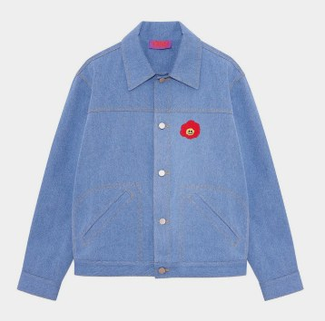
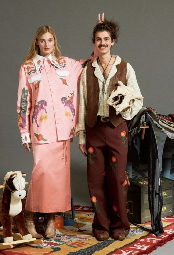
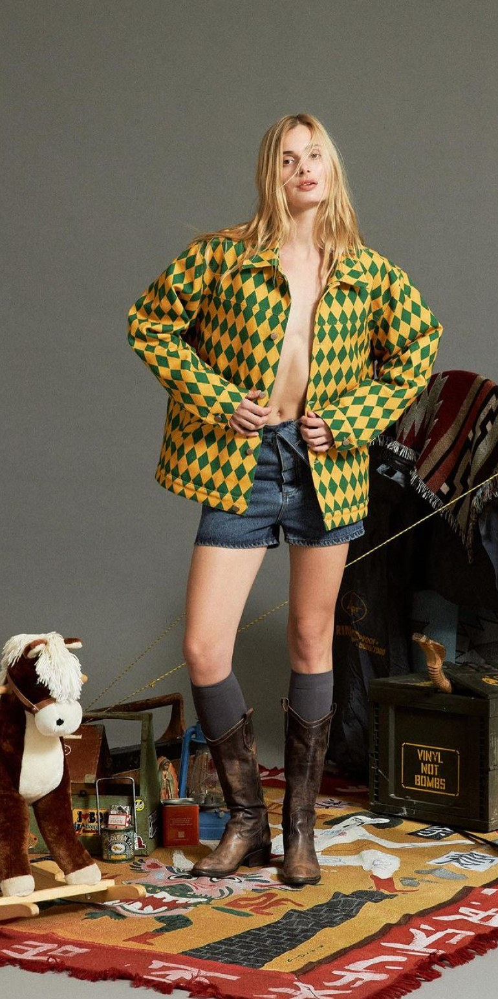

Сотрудничество с Kruzhok — это пример работы на пересечении дизайна и технологии. За год было выпущено несколько капсул и полностью разработана текстильная линейка для коллекции Burygin. Проект изначально предполагал поиск решений, а не повторение готовых подходов.
Работа велась с нестандартными материалами и конструкциями. Многие вещи требовали дополнительной проработки на уровне образцов: как ведет себя ткань, как она реагирует на обработку, как сохраняется форма.
Это не те задачи, которые можно закрыть по шаблону — здесь важно было постоянно проверять и корректировать решения.



Именно в таких условиях становится видно, насколько точно выстроен процесс. Коллекции получились выразительными, но при этом собранными: сложные визуальные решения не разрушили качество исполнения, а усилили его.